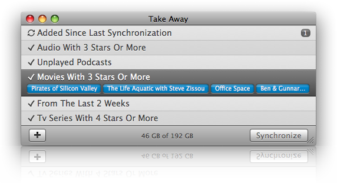
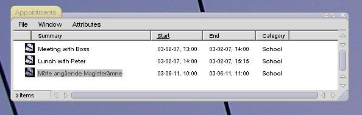
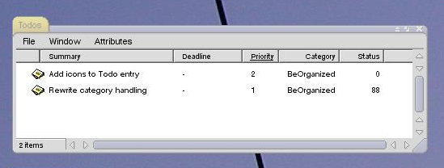
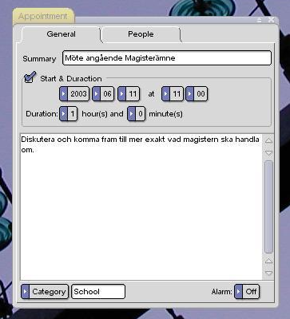
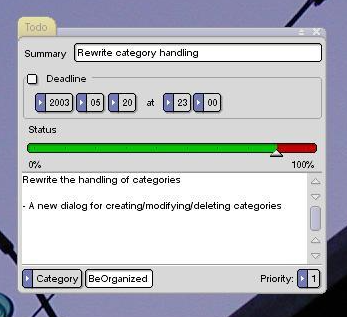
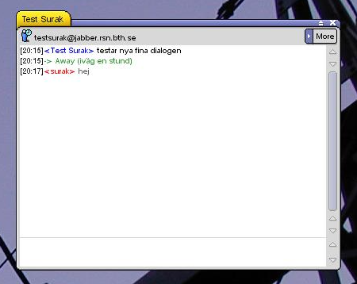
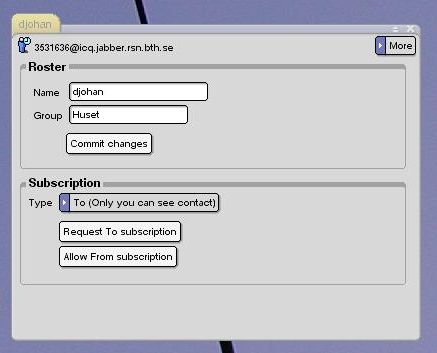
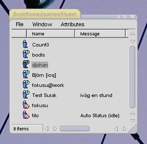
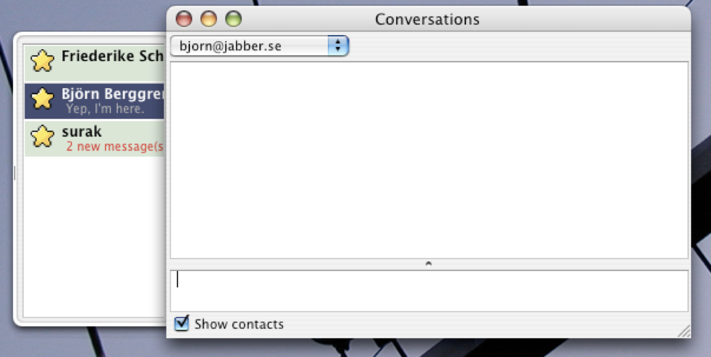
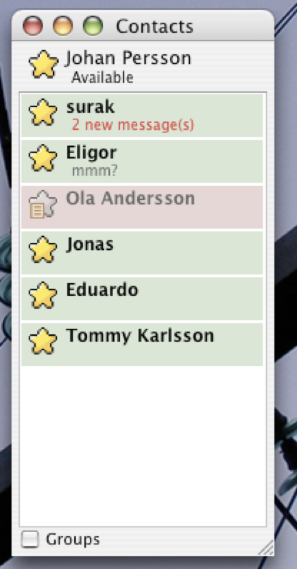

Some more or less completed private software projects of mine.
A Mac app for keeping iTunes libraries in sync across multiple machines. Development stopped after Apples announcement of iTunes Match which solved the same basic issue through the cloud.

The main window of Take Away that shows the sync state and buttons for adding new rules or to perform a sync.
Minimal library making handling of SQL queries in Scala a bit easier. It takes care of connection handling/pooling, SQL escaping, parameter conversion and to some extent transaction handling. No longer actively developed since better alternatives like Slick from Lightbend popped up.
A personal information manager written in C++ for BeOS, implemented using file attributes making it very integrated with system.

Query and view appointments directly in file manager.

Query and view todos directly in file manager.

Create or edit an appointment.

Create or edit a todo.
Minimal Jabber client written in C++ for BeOS. Was written out of necessity and supported only the chat-related parts of the protocol.

The main chat window.

Contact details window.

Contact list can be queried in the file system.
A client for the XML-based Instant messaging platform Jabber, written for Mac OS X/Cocoa and Linux/GNUstep in Objective-C. Designed to be modular and easy to extend with new functionality it relies heavily on plugins providing protocol-specific functionality. This in order to be able to cope with the changes of the Jabber extension protocols.

The main chat window with the good old Cocoa-folder.

The very simple contact list window.